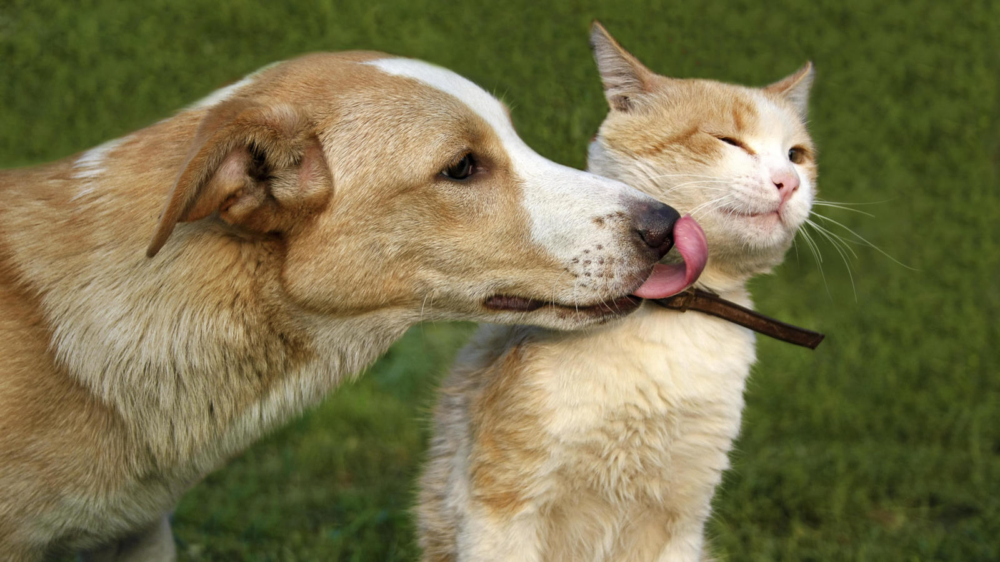

FOTO DE ANIMALES

Un animal es un ser vivo que puede moverse por sus propios medios. Por lo general, dentro de la denominación se incluye a los integrantes del reino conocido como Animalia.
Existen diversas características compartidas por la mayoría de los animales, aún con sus diferencias. Los animales ingieren sus alimentos, desarrollan una reproducción de tipo sexual y absorben oxígeno a través de la respiración. Estas son apenas algunas características básicas pero, por supuesto, los animales pueden ser muy diferentes entre sí.
Si bien los animales ingieren sus alimentos (y no los absorben, a diferencia de otros seres vivos), pueden diferenciarse según el tipo de alimentación. Hay animales carnívoros (que se alimentan de la carne de otros animales), herbívoros (que comen especies vegetales) y omnívoros (comen carne y plantas). Por otra parte, aunque los integrantes del reino Animalia respiran y consumen oxígeno, algunos lo hacen sobre la superficie terrestre y otros debajo del agua. Con estos detalles, podemos apreciar cómo el grupo de los animales es muy amplio e incluye especies de lo más diversas, desde elefantes hasta tiburones pasando por ratas, búhos y mosquitos.